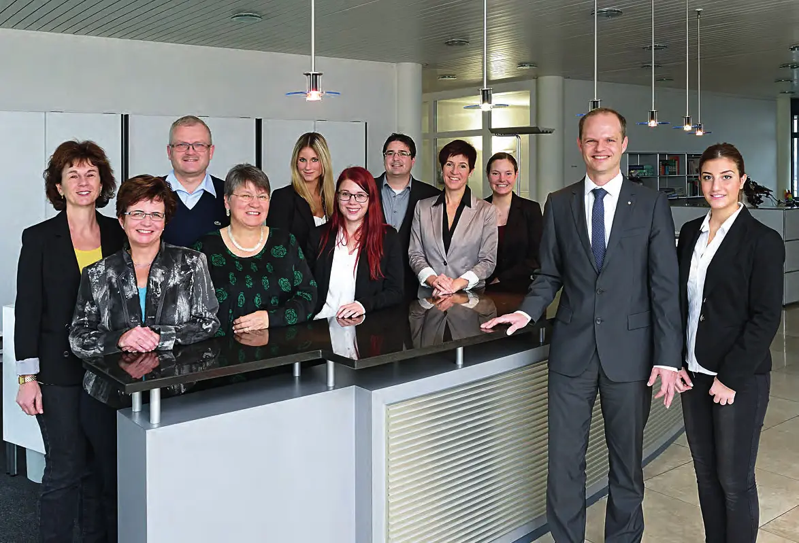
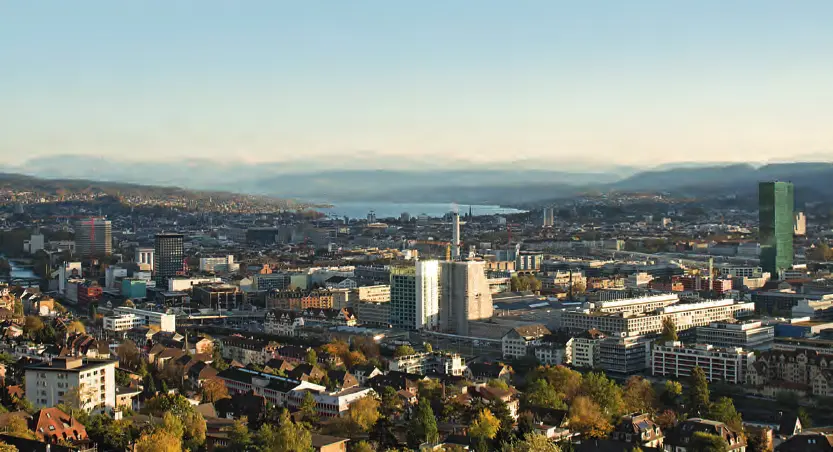
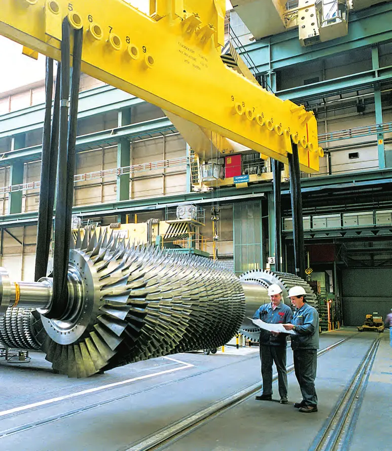
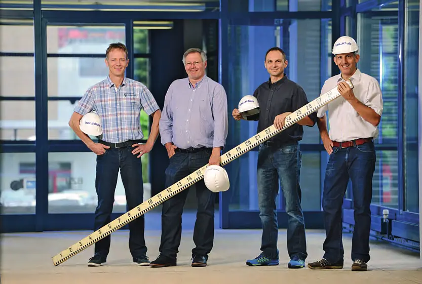
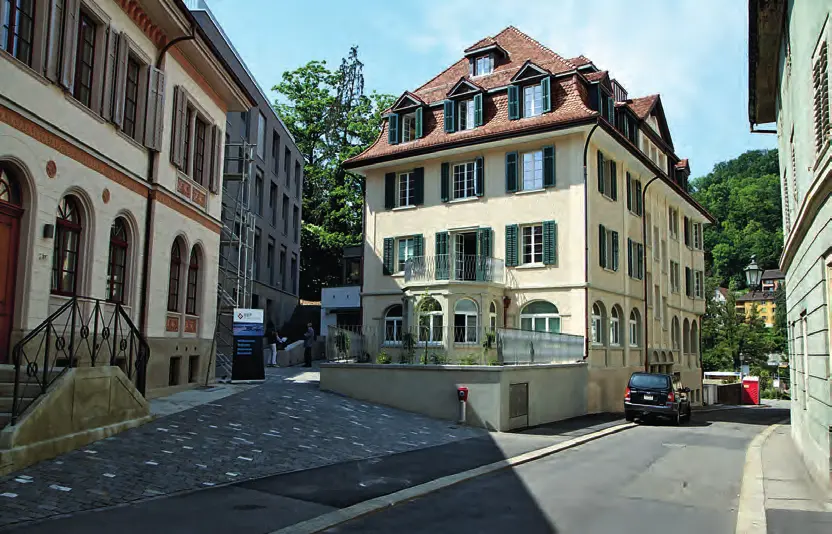
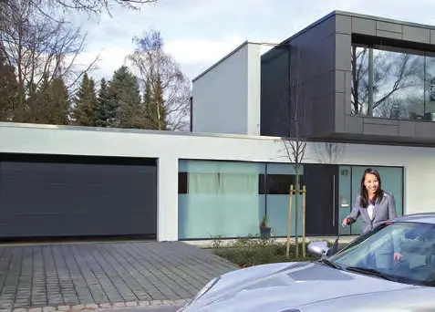
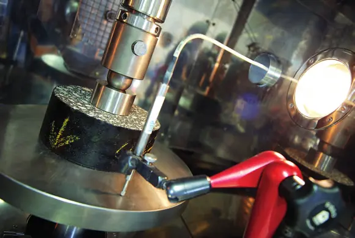
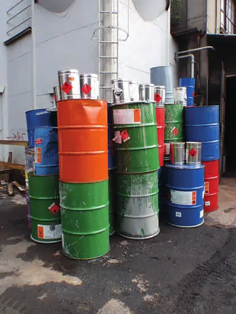

Collectivités · 2014 · Suisse alémanique (Soleure, Zurich, Winterthour, Aarau, Baden)
Swiss Knowhow – Union des villes suisses : Suisse alémanique (2014)
Numéro réalisé avec le Schweizerischer Städteverband (Union des villes suisses), consacré aux villes de Suisse alémanique. Il réunit des entretiens avec les présidents de ville et les responsables de l'urbanisme, de l'école, du développement économique et du tourisme de Soleure, Zurich, Winterthour, Aarau et Baden, complétés par les chambres de commerce et les agences de promotion. La seconde partie présente des entreprises et institutions de la région (énergie, construction, informatique, formation), plusieurs interviews étant traduites en anglais ou en français.
Sommaire · 38 articles
 Interview
InterviewStadt Solothurn – Interview mit Nationalrat Kurt Fluri
Le président de la ville de Soleure et de l'Union des villes suisses

InterviewSolothurner Handelskammer – Im Gespräch mit Direktor Daniel Probst
Conditions-cadres, export et pénurie de main-d'œuvre qualifiée
 Interview
InterviewRegion Solothurn Tourismus – Im Gespräch mit Tourismus-Direktor Jürgen Hofer
La plus belle ville baroque de Suisse
 Publireportage
PublireportageDas «Hybridwerk Aarmatt» bringt die Energiewende
Regio Energie Solothurn
 Interview
InterviewSchuldirektion der Stadt Solothurn – Interview mit Irène Schori, Schuldirektorin
Les écoles de la ville de Soleure

Stadt Solothurn – Interview mit der Leiterin des Stadtbauamtes, Andrea Lenggenhager
Culture du bâti et développement urbain
 Interview
InterviewStadt Zürich – Interview mit Stadtpräsidentin Corine Mauch
Une ville de plus de 400 000 habitants
InterviewStadt Zürich – Amt für Städtebau: Im Gespräch mit Patrick Gmür, Direktor
Densifier en partant de l'histoire de la ville

InterviewStadtentwicklung Stadt Zürich – Interview mit Benno Seiler
La promotion économique de la ville de Zurich
 Interview
InterviewGreater Zurich Area – Im Gespräch mit Geschäftsführerin Sonja Wollkopf Walt
Promouvoir la région métropolitaine à l'international
 Interview
InterviewStadt Winterthur – Interview mit Michael Künzle, Stadtpräsident
750 ans de droit de cité
 Interview
InterviewStadt Winterthur, Departement Bau – Im Gespräch mit Michael Hauser
Le chef de l'office de l'urbanisme de Winterthour
 Interview
InterviewStadt Winterthur, Departement Kulturelles und Dienste – Interview mit Mark Würth
Le responsable du développement urbain
 Interview
InterviewStadt Aarau – Im Gespräch mit Stadtpräsidentin Jolanda Urech
Prix Wakker 2014
InterviewWirtschaftsfachstelle der Stadt Aarau – Interview mit Andreas Burri
Promotion économique de la ville d'Aarau

Schule Aarau – Interview mit Remi Bürgi, Geschäftsleiter
Le modèle de l'école intégrative

InterviewAargauische Industrie- und Handelskammer – Im Gespräch mit Geschäftsleiter Peter Lüscher
Version anglaise : Aargau Chamber of Commerce and Industry

«aarau info» – Interview mit Esther Schmid, Leiterin
L'office du tourisme d'Aarau
 Interview
InterviewStadt Baden – Im Gespräch mit Thomas Lütolf, Leiter Standortmarketing
« Baden ist. »
InterviewStadt Baden – Interview mit Stadträtin Ruth Müri, Vorsteherin Ressort Bildung
Baden, ville de formation

InterviewSchweizerische Bauschule Aarau – Interview mit Erina Guzzi, Direktorin
Former les cadres de la construction

InterviewBBP AG – Interview mit CEO Per Trifunovic
Un « hidden champion » des logiciels bancaires à Baden (version anglaise incluse)

Centris AG, Solothurn – Interview mit Patrick Progin, CEO
« more than IT » pour les assureurs maladie (version française incluse)

Eberhard Bau AG – Im Gespräch mit VR-Präsident Heinz Eberhard
60 ans et pionnier de l'« urban mining » (version anglaise incluse)
 Interview
InterviewElex AG – Im Gespräch mit Geschäftsführer Peter Studer
Électrofiltres et épuration des fumées
 Interview
InterviewHardturm AG, Zürich – Im Gespräch mit Verwaltungsratspräsident Vincent Albers
Le Hard Turm Park à Zurich-Ouest (version anglaise incluse)
 Interview
InterviewH-Net AG – Interview mit Michael Ziegler, Geschäftsführer
Services eHealth et dossier électronique du patient

InterviewHörmann Schweiz AG – Interview mit CEO Andreas Breschan
Portes et portails (version française incluse)
 Interview
InterviewIBAarau AG – Interview mit Dr. Hans-Kaspar Scherrer
Le fournisseur d'énergie et d'eau d'Aarau (version anglaise incluse)

PublireportageIMP Bautest AG – Materialprüfung, Bauberatung, Analytik
Laboratoire indépendant d'essais de matériaux de construction
Die Zürcher Mittelschulen – Interview mit Alexandra Siegrist-Tsakanakis
Impuls Mittelschule (version française incluse)
 Interview
InterviewJura Materials – Interview mit André Germann, Bereichsleiter Verkauf
HASTAG (Zürich) AG, gravier, béton et recyclage
 Interview
InterviewMeworla GmbH – Interview mit Geschäftsführer Michael Baumer
CRM pour associations et gestion des affaires parlementaires

InterviewNeosys AG – Dienstleistungen für die Nachhaltigkeit: Interview mit Jürg Liechti
Environnement, sécurité et conformité légale (version française incluse)
InterviewRegio Energie Solothurn – Interview mit Felix Strässle, Direktor
« Energieservice public – so nah, so gut »
 Interview
InterviewAmt für Kultur und Sport des Kantons Solothurn – Interview mit Cäsar Eberlin, Amtsleiter
Patrimoine, encouragement culturel et sport

Die Qualitätsmühle mitten in Zürich
Nachhaltigkeit als Antrieb der grössten Mühle der Schweiz
Hochschule für Wirtschaft FHNW – Interview mit Prof. Dr. Ruedi Nützi, Direktor
Une formation pratique et internationale
Entreprises de ce numéro · 37
aarau info
Office du tourisme
Aargauische Industrie- und Handelskammer (AIHK)
Chambre de commerce et association patronale
Amt für Kultur und Sport des Kantons Solothurn (AKS)
Administration cantonale de la culture et du sport
BBP AG
Logiciels financiers et services SWIFT
Centris AG
Externalisation informatique pour assureurs maladie
Eberhard Bau AG (Eberhard Unternehmungen)
Génie civil, déconstruction, assainissement et recyclage
Elex AG
Épuration des gaz de fumée
Greater Zurich Area AG
Promotion économique internationale

H-Net AG
Logiciels eHealth et échange de données médicales
Hardturm AG
Développement immobilier
HASTAG (Zürich) AG
Gravier, béton, recyclage et décharges
Hochschule für Wirtschaft FHNW
Haute école spécialisée en économie
Hörmann Schweiz AG
Portes, portails et motorisations
IBAarau AG
Fourniture d'électricité, gaz, eau et chaleur
IMP Bautest AG
Essais de matériaux, conseil en construction et analyses
Impuls Mittelschule
Relations publiques des gymnases zurichois
Jura Management AG (Jura Materials)
Matériaux de construction (ciment, gravier, béton)
Meworla GmbH
Systèmes d'information et CRM
Neosys AG
Conseil en durabilité, environnement et sécurité
Regio Energie Solothurn (RES)
Fourniture d'énergie et d'eau
Region Solothurn Tourismus
Office du tourisme
Schuldirektion der Stadt Solothurn
Écoles communales
Schule Aarau
École obligatoire
Schweizerische Bauschule Aarau
École supérieure de la construction
Solothurner Handelskammer (SOHK)
Chambre de commerce

Stadt Aarau
Commune
Stadt Baden – Standortmarketing
Marketing territorial

Stadt Solothurn – Stadtpräsidium
Administration communale
Stadt Winterthur – Departement Bau, Amt für Städtebau
Urbanisme
Stadt Winterthur – Departement Kulturelles und Dienste, Stadtentwicklung
Développement urbain
Stadt Zürich – Präsidialdepartement
Administration communale
Stadtbauamt Solothurn
Urbanisme et constructions publiques
Stadtbüro Stadt Baden
Administration communale
Stadtentwicklung Stadt Zürich – Wirtschaftsförderung
Promotion économique
Stadtverwaltung Winterthur
Administration communale

Swissmill (Division der Coop Genossenschaft)
Meunerie
Wirtschaftsfachstelle der Stadt Aarau
Promotion économique communale
Aucun résultat.